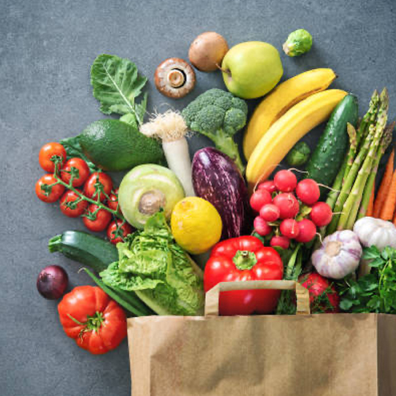
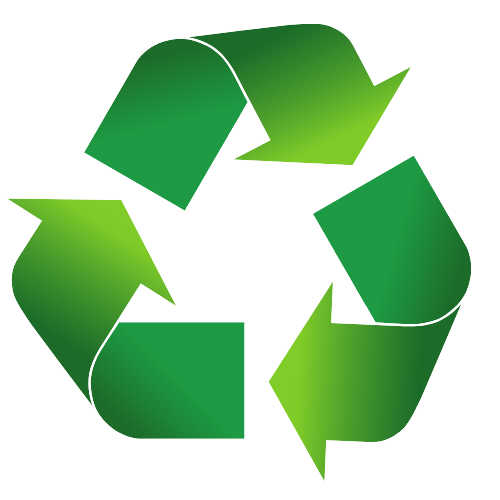
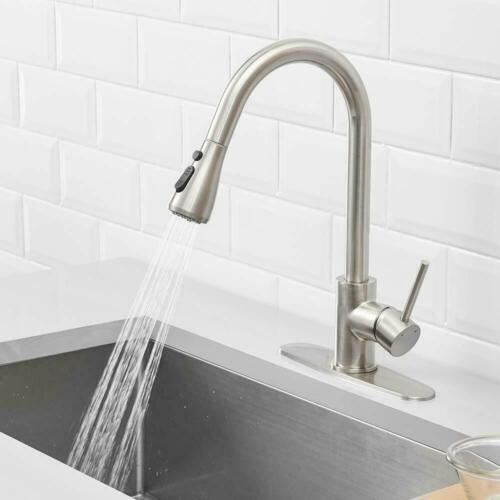
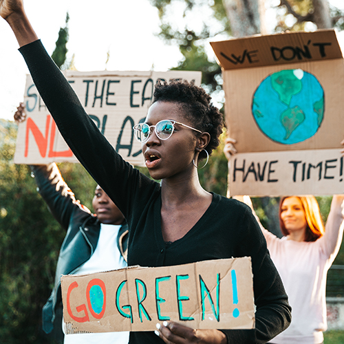

Recommendations
What can we do?
Home
Stats
Recommendations
Food Changes
Eat at least 1 vegeterian meal a week
60 Best Vegeterian Meals
50 Best Vegeterian Recipes
60 Vegeterian Dinner Recipes
Switch to less carbon intensive meats
Chicken
Turkey
Eliminate the transport of food
Food delivery services produce greenhouse gas emissions

Waste Changes
Shop green
Consider a product's durability, sustainability, and ease of recycling
Buy products with recycled content
Buy used items
Reduce food waste
Buy what you need
Compost scraps
Donate unused food
Reuse and repurpose
Old clothing
Grocery bags
Containers

Transportation Changes
Use green modes of transportation
Walking
Biking
Carpooling
Public transportation
Drive smart
Go easy on the breaks and gas
Use cruise control
Keep your car well-maintained
Observe the speed limit
Vehicle purchases
Choose a vehicle with higher miles per gallon
Choose an electric vehicle (EV)
Choose an enery-saving EV charger
Choose a nice, used vehicle
Water Changes
Use water efficiently
Turn off running faucets
Run your washer with a full load using cold water
Check for water leaks and have them leaked
Toilet
Faucets
Pipes
Shower changes
Install low-flow showerheads
Take shorter showers

Advocacy
Explore/Join these groups to make a difference
350
Climate Justice Alliance
Cultural Survival
EarthJustice
Environmental Defense Fund
Environmental Protection Agency (U.S.)
Global Greengrants Fund
Green for All
Greenpeace Environmental Justice Campaign
Movement Generation Justice & Ecology Project
National Oceanic and Atmospheric Administration
Organisation for Economic Co-operation and Development (OECD)
Resources for the Future
The Sunrise Movement
Trans Disaster Relief Fund
Union of Unconcerned Scientists
And more!
